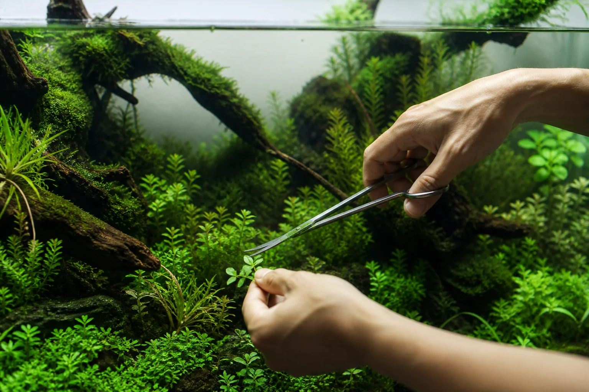

Trim with a plan,
not a panic.
A simple monthly sequence for trimming stems, opening flow paths, cleaning glass, and changing water without disturbing the whole biological layout.
Notes from the workbench
Short, practical field notes for building stable aquariums—written for first tanks and better second ones.

A simple monthly sequence for trimming stems, opening flow paths, cleaning glass, and changing water without disturbing the whole biological layout.
Beginner shelf
How beneficial nitrifying bacteria convert toxic fish respiration into harmless plant nutrients, and how to verify biological stability.
Juvenile fish represent only 20–30% of their adult metabolic load. Plan swimming strata, territory, and school cohesion before purchase.
A structured 20-minute maintenance rhythm that protects biological stability without stripping the beneficial microbiome.
Monthly planted-tank reset
Quick answers
Commonly four to six weeks, but a calendar alone cannot confirm cycling. Liquid testing must confirm that introduced ammonia is converted swiftly into nitrate with persistent zero ammonia and zero nitrite readings.
Always start with a small, compatible initial group (e.g., 6 small tetras or rasboras). Monitor water chemistry for one to two weeks before introducing the next group so beneficial nitrifying bacteria colonies can scale proportionally.
No. Replacing biological media destroys your established beneficial bacteria colonies. Simply squeeze and rinse coarse foam and ceramic rings in old tank water during a water change. Only activated carbon and fine filter floss require periodic replacement.